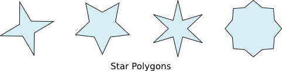
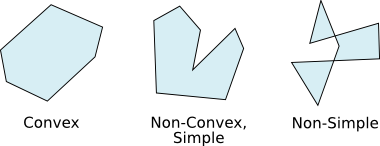
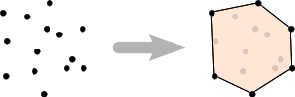
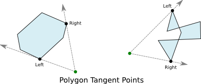

Polygons in planar are represented as a sequence of vertices. Each pair of vertices defines one edge of the polygon. The simplest polygon is the triangle, thus a planar.Polygon must have at least three vertices. The vertices of a polygon are mutable, but the number of vertices is fixed, so you cannot insert new vertices into an existing polygon object.
There are a number of ways to construct polygons. The default constructor simply accepts an iterable containing points. These become the vertices of the resulting polygon in whatever order they are supplied:
>>> from planar import Polygon
>>> poly = Polygon([(0,-1), (2,0), (0,1), (-2,0)])
It is also easy to construct regular polygons. To do so, you supply the regular() method with the number or vertices, radius value, and optionally a center point, and the angle of the first vertex:
>>> from planar import Polygon
>>> hexagon = Polygon.regular(6, radius=4, angle=30)
>>> print(hexagon)
Polygon([(3.4641, 2), (0, 4), (-3.4641, 2), (-3.4641, -2), (0, -4), (3.4641, -2)], is_convex=True)
The star() method lets you create radial polygons with vertices that alternate between two radii from the center point:
>>> from planar import Polygon
>>> star = Polygon.star(4, 1, 4)
>>> print(star)
Polygon([(1, 0), (2.82843, 2.82843), (0, 1), (-2.82843, 2.82843), (-1, 0), (-2.82843, -2.82843), (0, -1), (2.82843, -2.82843)], is_convex=False, is_simple=True)
The first argument of star() is the number of “peaks”. The resulting polygon has twice this number of vertices. The second and third arguments are the two radii that control the size of the peaks.
Polygons are broadly classified into simple and non-simple, convex and non-convex. planar can compute the classification for any arbitrary polygon. The classification has consequences that affect the operations and algorithms that can be used with the polygon.
A simple polygon is not self-intersecting, that is no two edges of the polygon cross. Simple polygons have a more simply defined interior and exterior, and also have a centroid. Non-simple polygons can have extremely complex boundaries. The is_simple attribute of a polygon instance can be inspected to determine if the polygon is simple. This value can be costly to compute for very large polygons, so it is cached the first time it is accessed.
A convex polygon has the simplest boundary topology. For any two points inside a convex shape, all points on the line between them are also inside. If you were to walk along the edges of a convex polygon, at each vertex you would always turn in the same direction, or continue straight. All convex polygons are also simple. The is_convex polygon attribute can be inspected to determine the convexity of a polygon object. This value is also cached to speed repeated access. Note that triangles are always both simple, and convex.
Many operations have very fast algorithms for convex polygons, so planar will often compute this attribute itself to select the best algorithm. If you supply a sequence of vertices when constructing a polygon that you know are already simple, or convex, you can declare this in the constructor to save calculations later. Be sure you declare these classifications correctly, however, or you may get incorrect results when using the polygon. When in doubt, let planar determine these values for you.
As mentioned above, simple polygons have a centroid point. This is accessible via the centroid attribute. For non-simple polygons this attribute will be None. The centroid of a polygon is the geometric center point of the shape. The centroid would be the center of mass if the shape were made from a sheet of material with uniform density. For this reason, the centroid is often used as the natural point of rotation for shapes that simulate an object using Newtonian physics. Note that for non-convex polygons, the centroid may be outside of the polygon itself. For convex polygons, the centroid is always an interior point.
As with all closed shapes, polygons have a bounding box accessible via the bounding_box attribute. This is the smallest BoundingBox that completely encloses the polygon.
Since operating on convex polygons is often much more efficient, it can be useful to approximate complex shapes, or outline sets of points with a convex polygon. To facilitate this, the Polygon class provides an alternate constructor method, convex_hull().
The convex_hull() method accepts any sequence of points as its argument. Another polygon is also a suitable input, since it is also a sequence of points. The resulting polygon is the convex hull of the provided points. This is the smallest convex polygon that encloses all of the points.
As with other shapes, you can transform polygons by multiplying them with Affine objects. Using infix multiplication, this results in a new polygon object. You can also use in-place multiplication (using *=) to transform a polygon in-place. Transforming a polygon with an affine transform does not affect its classification. Thus, affine transforming a convex polygon always results in a convex polygon.
Polygons can also be compared for equality. Polygons are considered equal irrespective of winding direction or starting vertex. Polygons are equal so long as they have the same edges.
You can test whether a point is inside or outside of any polygon using the contains_point() method. This method works regardless of the classification of the polygon, and is not sensitive to the winding direction. contains_point() is highly efficient for convex polygons, and particularly regular polygons. Testing points against non-convex and non-simple polygons is also implemented efficiently, however these tests grow more expensive in proportion to the number of edges of the polygon.
A highly optimized winding count test is used to implement contains_point() for non-convex polygons. In cases where the polygon overlaps itself, this test will still return True for points inside the overlapping region. So, it is not possible to cut holes in a polygon by creating overlapping areas.
Given a point exterior to a polygon, you can find which vertices of the polygon are considered the tangent points using the tangents_to_point() method. This works for any arbitrary polygon, but like contains_point() it is particularly efficient for convex polygons. The tangent points are returned in a 2-tuple as the left and right tangents respectively from the perspective of the exterior point. Finding the tangent points can be useful for line of sight, or shadowing calculations.
